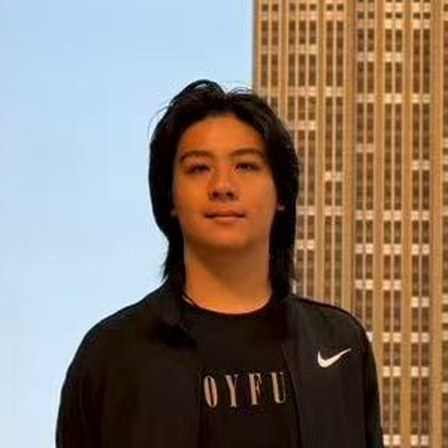

Zhekai Tang
Second-year student
University of Minnesota
About
I am a second-year student at the University of Minnesota. My research focuses on self-driving labs: laboratories that combine automation and AI to plan and run scientific experiments.
Contact
tang0948@umn.edu
University of Minnesota